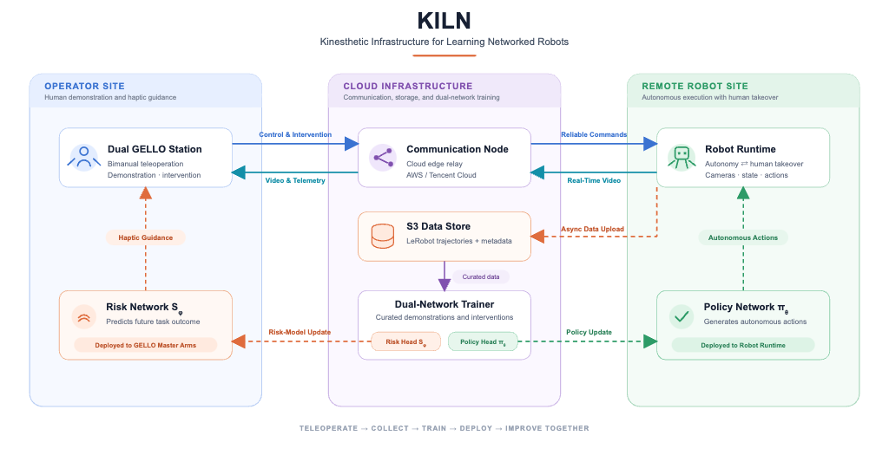

KILN#
Kinesthetic Infrastructure for Learning Networked Robot
KILN is an integrated hardware-software teleoperation and learning system for embodied robots working in contact-rich environments. One networked pipeline connects the operator station — macOS workstation, GELLO master arms, haptic input — through a cloud relay to the robot’s on-board Jetson Thor edge computer, which directly drives the Tianji Marvin dual-arm robot, VMR mobile base, and dual Intel RealSense D405 video streams.
The loop is bidirectional: human demonstrations teach the robot in real time, collected data trains policies, and policies deploy back onto the same hardware. We are building a contributor-friendly repository with modular client, edge, and data-collection components so labs can teleoperate, collect, train, and deploy — then improve — on shared infrastructure.


KILN — Kinesthetic Infrastructure for Learning Networked Robot. Operator-site haptic guidance, cloud training, and remote robot autonomy share one networked pipeline: teleoperate → collect → train → deploy → improve together.#
The two ends of the loop:

GELLO master-arm station — dual Dynamixel leader arms with buttons and jog input. The human teaches through this interface; setup and calibration live in the GELLO master arm guide.
Contents#
The documentation is organized into five parts:
- 🏃 Getting Started
Install hardware, set up the Mac client and Jetson edge, run your first teleop session, and set up the GELLO master arm.
- 🧠 Software System
System architecture, network topology, and the control-vs-video dual-link design.
- 🔁 Reproduction
Reproduction paths from zero, lab LAN direct mode, and the cloud relay profile.
- 🔧 Configuration
Unified config schema, profiles, and secrets management.
- 📚 Reference
Ports, services, CLI tools, and troubleshooting.
Getting Started
Software System
Configuration
Reference
Supported Features#
Module |
Runtime |
Protocol / Notes |
|---|---|---|
Gtk workstation UI |
Mac |
Video, arm control, chassis tabs |
GELLO master-arm follow |
Mac USB Dynamixel |
Commands forwarded to Jetson agent |
ESP32 buttons / joystick |
Mac USB serial |
Merged firmware → workstation |
SpaceMouse |
Jetson USB (Mac fallback) |
HID inside agent |
Dual-arm control |
Jetson |
JSON over TCP |
PGC grippers |
Jetson agent RS485 |
Modbus |
VMR chassis |
Jetson |
TCP → VMR |
Dual D405 video |
Jetson → RTP → relay |
UDP |
LeRobot recording |
Jetson |
Optional S3 upload |
Quicklinks#
Link |
Description |
|---|---|
Source repository |
|
|
|
Site, teleop, RTP, recording, S3 |
|
From zero to verified teleop |
Repository Layout#
Lambda2-teleoperation-gello/
├── README.md # Quick overview (Chinese)
├── docs/ # KILN documentation site (English)
├── config/ # Unified config schema + doctor CLI
├── client/ # Mac/PC workstation + GELLO + chassis UI
└── jetson/ # Jetson deploy bundle + edge services